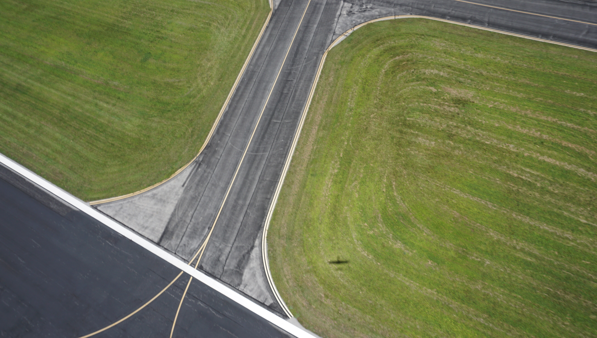
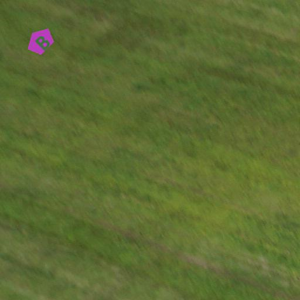
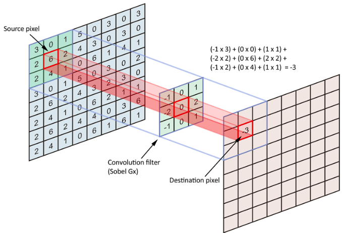
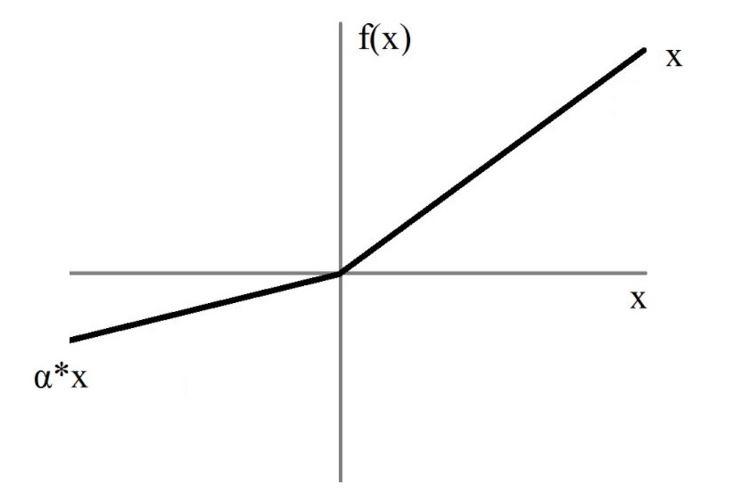

Introduction
The UAVA Image Recognition pipeline consists of various steps:
-
Aerial imagery is captured from the drone using an RGB camera. The GSD (ground sampling distance) can vary, but the drone's altitude is a couple hundred feet, on average.
-
The original images taken can be up to 4k quality. For efficient computation, we slice the image up into smaller tiles for processing.
-
These tiles are sent to a classification network which determines whether a specific tile has a target or not. This is called binary classification because there are just two classes.
-
Tiles classified with targets are sent to an object detection model which is not only able to determine the shape and alphanumeric (A-Z or 0-9), but is also able to localize, or draw a box, around the target in the tile.
-
The detected objects are further processed using single shot learning to determine their orientation and colors.
The UAVA Image Recognition software stack can be found here:
[hawk-eye].
Image Transformation
In this section, we will explore a few of the fundemental image processing functions we need to generate synthetic data for our machine learning models. We must use synthetic data because training these models takes thousands of images, and we do not have the capacity to capture these in reality.
We'll use PIL to perform most of the work,
however there are other noteable packages available, such as OpenCV.
Basic Image Manipulation and Data Generation
Over the next couple of examples, we will walk through how we create training data for our vision models. Roughly, we will take pre-drawn shapes, combine them with pre-defined text, and paste the final target onto background tiles.
Background Preparation
First, make sure PIL is installed:
python3 -m pip install pillow==7.2.0
Now, let's get coding.
# Import the PIL package.
from PIL import Image
# Open up the background image. NOTE: The path on your computer will be different.
img = Image.open("//path//to//comp_photo.jpg")
# Sanity check to make sure you have the right image.
img.show("Example Image")

Also, check the size of this image. Machine learning models are more performant on smaller images because there is less computation. Therfore, we need to be mindful about our input image size.
print(f"Image width, height: {*img.size,}.")
We'll need to take tiles from this image to make the input more manageable for the model. Let's make some 512 x 512 pixel tiles. This is the size we currently use for our object detection model.
# Desired tile size.
tile_width = tile_height = 512
# Make a folder to save images. We use `pathlib` for most path manipulation.
import pathlib
save_dir = pathlib.Path("//path/to/output/folder").expanduser()
save_dir.mkdir(exist_ok=True, parents=True)
# Now tile up the image:
for x in range(0, img.size[0] - tile_width, tile_width):
for y in range(0, img.size[1] - tile_height, tile_height):
crop = img.crop((x, y, x + tile_width, y + tile_height))
crop.save(save_dir / f"crop_{x}_{y}.jpg")
print(f"Generated {len(list(save_dir.glob('*.jpg')))} slices!")
You should see tiles in your save_dir folder!
Target Generation Setup
Now, we need to load in our artifical targets. We'll use python's
tarfile package to extract the shapes. First,
install the python module requests==2.24.0 using pip.
import tarfile
import tempfile
import requests
# Where to download assets.
url = "https://bintray.com/uavaustin/target-finder-assets/download_file?file_path=base-shapes-v1.tar.gz"
# Where to save assets.
save_dir = pathlib.Path("//path/to/save/dir").expanduser()
save_dir.mkdir(exist_ok=True, parents=True)
res = requests.get(url, stream=True)
# Make a temp dir to download archive.
with tempfile.TemporaryDirectory() as d:
tmp_file = pathlib.Path(d) / "file.tar.gz"
tmp_file.write_bytes(res.raw.read())
with tarfile.open(tmp_file) as tar:
tar.extractall(save_dir)
Congrats! You now have the shapes for data generation. Let's open one of the target images.
shape = Image.open("//path//to//shape.jpg")
# Sanity check
shape.show("Example shape")

Finally, we need to download the various fonts we currently use for data generation. Perform
the same steps you did to download the shapes, but use this url instead:
https://bintray.com/uavaustin/target-finder-assets/download_file?file_path=fonts.tar.gz
Image Manipulation
Since we have the background tiles and shape images loaded, let's do some augmentation to the shape and then paste it onto the background image.
Let's start with rotation. PIL's rotation function will return a copy of this image, rotated the given number of degrees counter clockwise around its center. The function takes three arguments:
-
angle: the degrees to rotate counter clockwise about the center.
-
resample: optional flag to choose which technique to use to interpolate new pixel values expand.
-
expand: If 1, the image will expand to fit the newly rotated image.
# First, you must open the target image!
target = target.rotate(45)
target.show('Rotated Image')

The next part of the data generation process requires pasting a letter onto the shape. Not only must we identify the shape at competition, but also the letter or number!
from PIL import ImageDraw, ImageFont
# Create an drawable object which we can edit.
target_draw = ImageDraw.Draw(target)
# Use B for example
alpha = "B"
# Define font multiplier to shrink or grow to fit letter to target. For some shape/letter
# combinations, we must adapt the size of the letter.
font_multiplier = 0.5
# Path to font image file
font_file = save_dir / "fonts/Gudea/Gudea-Bold.ttf"
# Create font height based on target size and scaled by font_multiplier.
font_size = int(round(font_multiplier * target.height))
# Create font to put on target_draw.
font = ImageFont.truetype(str(font_file), font_size)
# Get width and height of the font.
w, h = target_draw.textsize(alpha, font=font)
# Get top left coordinate of where to paste alpha onto target.
x = (target.width - w) / 2
y = (target.height - h) / 2
# Set the rgb color of the alpha.
alpha_rgb = ((64, 115, 64)) # Greenish
# Finally, draw the alpha onto the target
target_draw.text((x,y), alpha, alpha_rgb, font=font)
# Rotate target
angle = 45
rotated_image = target.rotate(angle, expand=1)
rotated_image.show("Rotated Image")

Right now, there is a white background around the target, but we want to paste just the target onto a background slice. How can we make everything but the target transparent? Luckily, we can mainpulate the alpha channel on an image. This controls the pixel transparency value. We will set all white pixels to 0 alpha.
for x in range(rotated_image.width):
for y in range(rotated_image.height):
r, g, b, a = rotated_image.getpixel((x, y))
if r == 255 and g == 255 and b == 255:
rotated_image.putpixel((x, y), (0, 0, 0, 0))
Using PIL's getbbox function, the smallest bounding box around the non zero region of
the image can expressed as a tuple. We can then use this tuple to crop the image down to
just the target.
rotated_crop = rotated_image.crop(rotated_image.getbbox())
We're getting close! Let's check the size of the target.
rotated_image.size
>>> (535, 535)
We need to downscale the target to make it more realistic on the background slice. Remember, the background tiles slices are only 512 x 512, so let's make the shape much smaller.
rotated_image = rotated_image.resize((100, 100))
Finally, time to paste the target onto the background. We will paste the target's top left pixel to (20, 20) on the background. But first, open up one of the background tiles you created!
paste_loc = (20, 20)
background_tile.paste(rotated_image, paste_loc, rotated_image)
background_tile.show()

We need to save the class and location of this target for our model data generation later. We will save the target class, the (x,y) coordinate of the top left corner, height, and width.
w_target, h_target = rotated_image.size
txt = pathlib.Path("background_target.txt")
txt.write_text(
f"pentagon, {int(paste_loc[0])}, {int(paste_loc[1])}, {w_target}, {h_target}\n"
)
The output background_target.txt file should have the single following line:
pentagon, 20, 20, 100, 100
You've now gone through the basic pipeline of how we create our data for the models. Data is by far the most important aspect of machine learning.
Introduction to PyTorch
This chapter will give you a brief introduction into convolutional neural networks and PyTorch, a fast growing machine learning framework.
Convolutional Neural Networks
A Convolutional Neural Network (CNN) is a type of neural network primarily used for image recognition and classification. We will explore the basic building blocks of a CNN.
Most modern convolutional nets are made up of the same type of layers. The first is the convolutional filter.
Filters
A convolutional filter extracts features from a given input and is motivated by the idea of efficient (or sparse) parameter sharing during signal analysis (cross correlation). For now, think of features as abstract components of an image that make sense to the model. When we see a human face, we instinctually recognize features, but the computer might see different ones. The following is an example of a convolutional filter applied to an input matrix.

In this image we have a 3x3 filter (9 weights) being applied to our input. The convolution operation is essentially a weighted linear combination of portions of the input, and these weights extract certain features.
In real convolutional networks, we end up with thousands of filters. There are a few more inputs to the convolutional layer which I'll touch on here:
stride: The number of rows/columns to jump when moving to the next convolution.padding: Without padding, a convolutional of filter size > 1 will result in an input size greater than the output. Padding adds a value around the outside of the input so that the output is a certain size.kernel size: The kernel does not have to be 3x3 or even square.
Batch Normalization
Batch normalization (BN) was introducted in a 2015 paper, here. While BN is still a hotly debated topic because people disagree on why it works, most people agree it certainly works. The idea is to normalize each input by finding the mean and variance. Many think of this as allowing subsequent levels to not be largely affected by the activations of the previous level, meaning each level can learn independently. This tends to make training more stable.
Activations
The activation is a function that is applied to each convolutional output. Activation
functions introduce non-linearities into the models and help the learning process
converge quicker. Here is a graph of the leaky ReLU activation function. Without
activations, a convolutional neural net would actually just be a composition of linear
functions!

The idea here is anything > 0 remains the same, but anything below 0 is changed to some
factor multiplied by the value.
Pooling
Pooling is a type of layer with no learnable parameters. This operation is used to downsample extracted features which can help the model generalize feature associations, preventing overfitting. Also, this method decreases the amount of parameters, making the training and inferencing process quicker.

Another commonly used pooling level is average pooling.
Intro to PyTorch
From the PyTorch website:
"An open source machine learning framework that accelerates the path from research prototyping to production deployment."
While TensorFlow was the go-to machine learning framework for quite some time, developers of PyTorch (a Facebook platform), saw an opportunity to create a framework that excelled in the areas where TensorFlow lacked. What the devs created is an extremely dynamic, user friendly library which enables rapid prototyping.
Let's dive in to some code. We'll rely upon some of the PyTorch docs and tutorials as they are great resources.
Install the CPU PyTorch package like so. If you have a GPU, you're more than welcome to install the GPU version.
python3 -m pip install torch==1.6.0+cpu torchvision==0.7.0+cpu \
-f https://download.pytorch.org/whl/torch_stable.html
PyTorch Image Classification
We'll use some built-in packages to load a classification model and perform inference, and we'll heavily rely on this tutorial, but with a couple of adaptations.
The package we installed above, torchvision, is an external package maintained by
PyTorch devs and the open source community. It comes with a variety of items, such as
models architectures, model weights, data, and more.
import torch
import torchvision
from torchvision import transforms
# Define some basic transformations for loading the images. Convolutional nets tend
# to learn better when the inputs of layers are normalized (think batchnorm), so we will
# normalize our input images.
transform = transforms.Compose(
[transforms.ToTensor(), transforms.Normalize((0.5, 0.5, 0.5), (0.5, 0.5, 0.5))]
)
# These are the CIFAR-10 classes:
classes = (
"plane", "car", "bird", "cat", "deer", "dog", "frog", "horse", "ship", "truck"
)
# Load the CIFAR-10 datasets. We have a train set which the model learns from, but we
# also need a set which the model never learns from that we use to monitor progress.
trainset = torchvision.datasets.CIFAR10(root="./data", train=True,
download=True, transform=transform)
testset = torchvision.datasets.CIFAR10(root="./data", train=False,
download=True, transform=transform)
Next, we need a method to actually load this data, i.e. some object which will open the
image files, load them into memory, and apply the transformations. In PyTorch, we use
the
torch.utils.data.DataLoader.
Internally, the dataloader calls __getitem__ on our datasets, a method which can be
implemented for custom datasets, like in the actual UAV code.
# Batch size: How many images to load on each iteration.
# shuffle: Whether or not to shuffle the data. Good for training, not useful for test.
trainloader = torch.utils.data.DataLoader(trainset, batch_size=4, shuffle=True)
testloader = torch.utils.data.DataLoader(testset, batch_size=4, shuffle=False)
We have our data, so now we need to make a model to learn from this dataset. We'll define model using some of the basic building blocks discussed in the previous section. The output of this model will be vector of length equal to the number of classes in the dataset. The vector values will correspond to which class the model predicts the image belongs to.
net = torch.nn.Sequential(
torch.nn.Conv2d(3, 8, 3, stride=1, padding=1),
torch.nn.MaxPool2d(2),
torch.nn.Conv2d(8, 16, 3, stride=1, padding=1),
torch.nn.MaxPool2d(2),
torch.nn.Conv2d(16, 32, 3, stride=1, padding=1),
torch.nn.AdaptiveAvgPool2d(1),
torch.nn.Flatten(),
torch.nn.Linear(32, len(classes))
)
OK, we have data and a model. Now we need to define the loss function which informs the model how far away its predictions are from the ground truth. Cross entropy is typically used in multi-class classification problems. In general, think of the model outputting a probability distribution over the given classes, and cross entropy measures the difference between the predicted and ground truth distributions.
loss_fn = torch.nn.CrossEntropyLoss()
The last piece to the puzzel is a method to update the weights of the model based on
what our loss_fn returns. In PyTorch, these are called optimizers. There are many
optimizers out there, but for simplicity, assume the optimizer simply updates a model
based on information recieved from the loss_fn.
optimizer = torch.optim.Adam(net.parameters(), lr=1.0e-3)
Awesome! Now we have all the necessary building blocks to train our own classifier!
Classifier Training
In just a few lines of code, we will be able to train our model. We will loop over the
trainloader to load batches of data, perform a forward pass through the model, call
the loss_fn then pass the results through the model using backpropagation, and then
update the model's weights.
for idx, (images, labels) in enumerate(trainloader):
# Take this for granted, but PyTorch optimizers always keep gradient history unless
# we manually flush it out.
optimizer.zero_grad()
# forward + backward + optimizer step
outputs = net(images)
loss = loss_fn(outputs, labels)
loss.backward()
optimizer.step()
# print statistics
running_loss += loss.item()
if idx % 100 == 0:
print(f"Step: {idx}. Loss: {running_loss / 100}.")
running_loss = 0.0
You should start to see the loss values slowly decrease as training goes on! The smaller the loss, the better the model is doing on the training data.
We also like to monitor the model's performance on images that it does not train on. This is called test or validation data. The code looks like so:
correct = total = 0
# During training, we want PyTorch to keep a record of how values are computed, i.e., the
# inputs and outputs so we can send information back through the model. Since we are
# only testing the model here, we do not care about keeping this record of the gradients.
with torch.no_grad():
for images, labels in testloader:
outputs = net(images)
_, predicted = torch.max(outputs.data, 1)
total += labels.size(0)
correct += (predicted == labels).sum().item()
print(f"Accuracy of the network on the 10000 test images: {100 * correct / total:.4f}")
Hopefully, you'll see something like:
Accuracy of the network on the 10000 test images: 39.5000.
Not great, but we can continue training to make the model better!
Summary
By now, you have a basic understanding of the high-level pipeline for training a classifier using PyTorch. We have skipped over some important aspects to training, namely backpropogation, but this tends to be the trickiest subject for new students. There are numerous online resources to learn more about deep learning here: